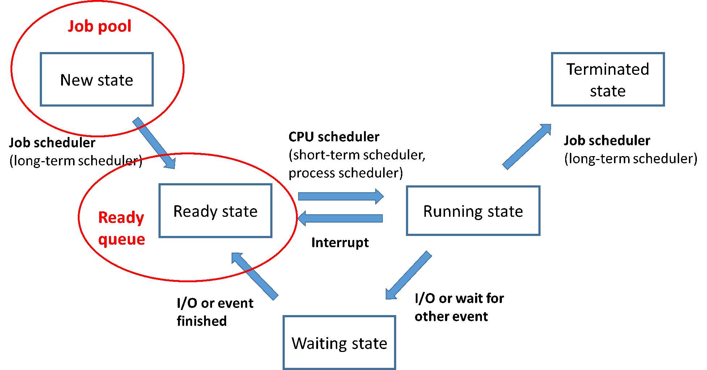

作業系統的排程
〈同時點開好多個程式，究竟電腦是怎麼處理的呢？〉第一回
常常我們一打開電腦，就是先登錄Line電腦版，然後打開youtube點個喜歡的歌聽，最後再打開word或是ppt來處理每天的例行公事。這時，不知道會不會有一種：「奇怪，怎麼我同時打開那麼多程式，每個程式還是執行得這麼順，都不會卡卡」的疑問？又或者，會有：「為什麼我的電腦跑很多個程式的時候總是卡卡的，別人的就不會？」其實這些都與作業系統的「排程功能」還有「Multi-tasking」的概念有關。在這一回中會先介紹電腦的「排程功能」，下一回再來介紹「Multi-tasking」相關的概念，最後再來討論電腦跑多個程式時順順或是卡卡的原因。
排程功能
首先，當我們點開某個程式(program)的時候，被點開的程式就會變成程序(process)。從「程式program」變成「程序process」之後，再來我們可以透過以下的圖來了解一個程序從開始到結束它經歷了什麼樣的狀態變化。

- 首先，被點開的程式(program)變成程序(process)，此時它的狀態來到New state，被存到稱為Job pool的地方。Job pool中可能會有很多個被點開而準備要被執行的processes。
- 接著，一個叫Job scheduler的東西會從Job pool中選擇其中一個process放到Ready queue中，同時也把跟這個process有關的資源(程式碼、資料等等)載入記憶體中，此時這個process的狀態來到Ready state。
- 由CPU scheduler按照所使用的CPU排程演算法，決定下一個要被CPU執行的process是哪一個。被選中的那個process即進入Running state，開始被執行。
- 正在被執行的process可能會發生以下3種情況，不同的情況會有不同的處理：
- Process執行完了，它的狀態變成Terminated state，後續就交由Job scheduler來處理，離開Job pool。
- 因為發生了中斷事件(Interrupt)而被迫暫停執行。此時它會回到Ready state，然後再次的回到Ready queue中等待下次的CPU scheduler召喚。
- 需要執行I/O(Input/Output)而進入Waiting state，等到I/O執行完畢再進到Ready queue中。
小結
以上是一個program從被點開之後到執行結束會經過的生命週期。當我們點開某個程式的時候，強大的作業系統就會執行排程功能來幫我們完成上述的複雜步驟，讓我們能夠享受一邊聽音樂一邊做報告的時光，不用為多個程式如何同時執行而操心囉。

國立交通大學材料系奈米科技碩士班畢業(現在應該稱國立陽明交通大學ʕ •ᴥ•ʔ)。雖然非資工相關科系畢業，但本著對資工領域的興趣而開始自學相關知識，目前則專攻網頁相關知識，如HTML5、CSS3、JavaScript、Node.js。以跨領域學習者的角度來介紹資工領域相關的知識，除了加深自己對相關知識的理解，也期望同是跨領域學習的朋友們因為瀏覽我的文章而有更多不一樣的觀點可以參考。